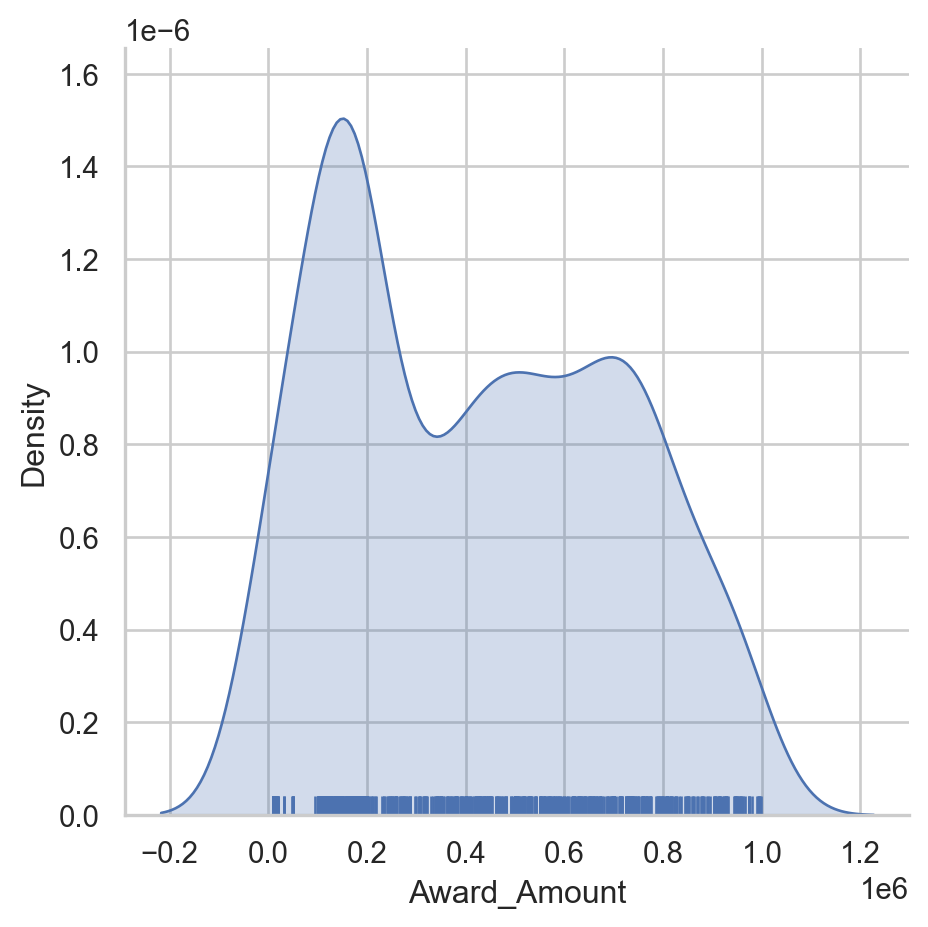
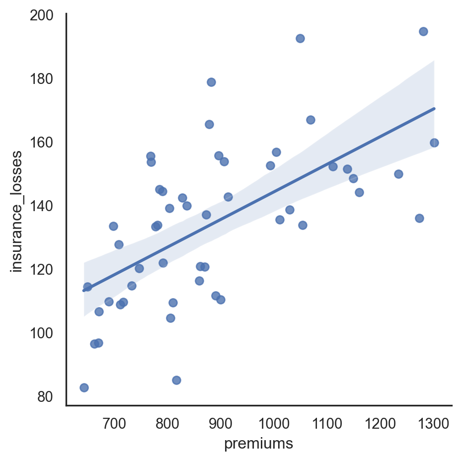
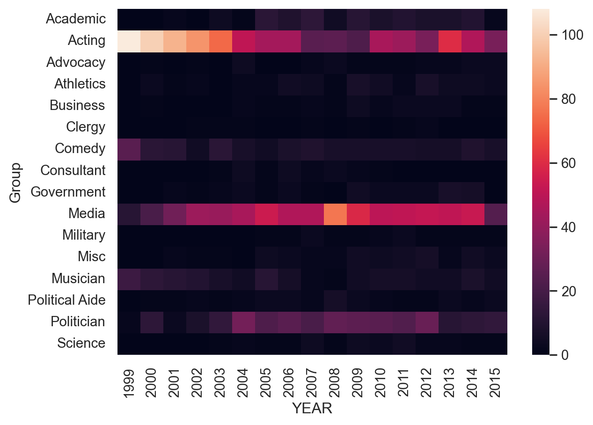
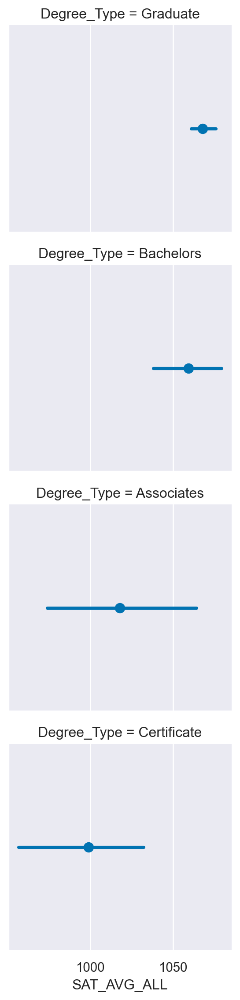
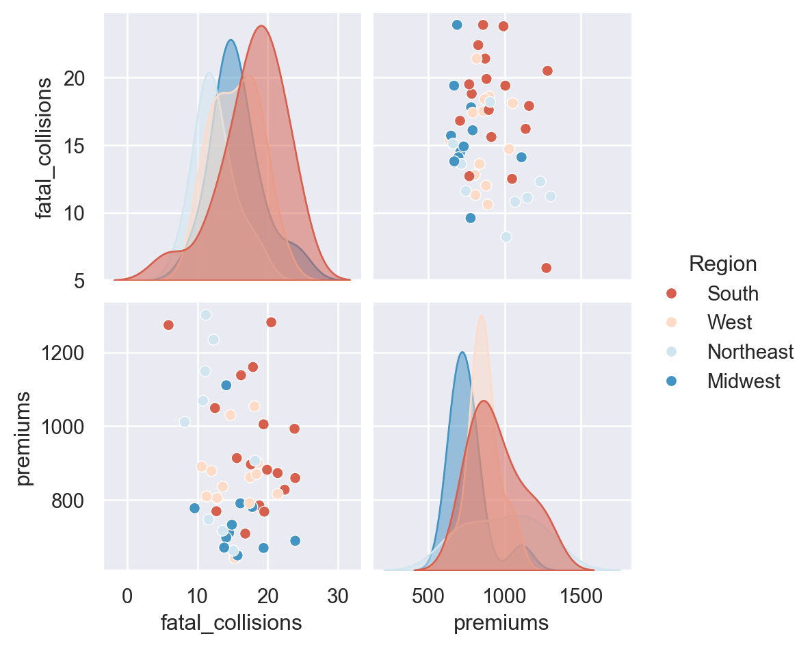
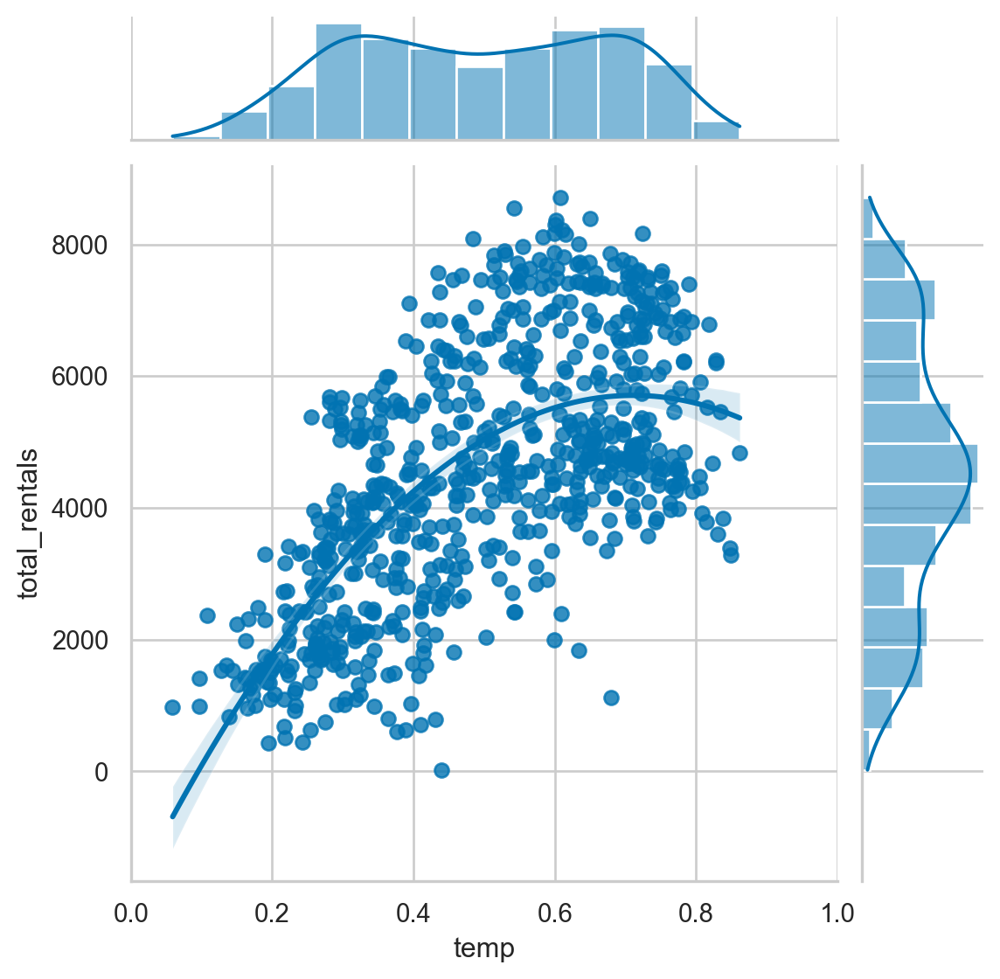
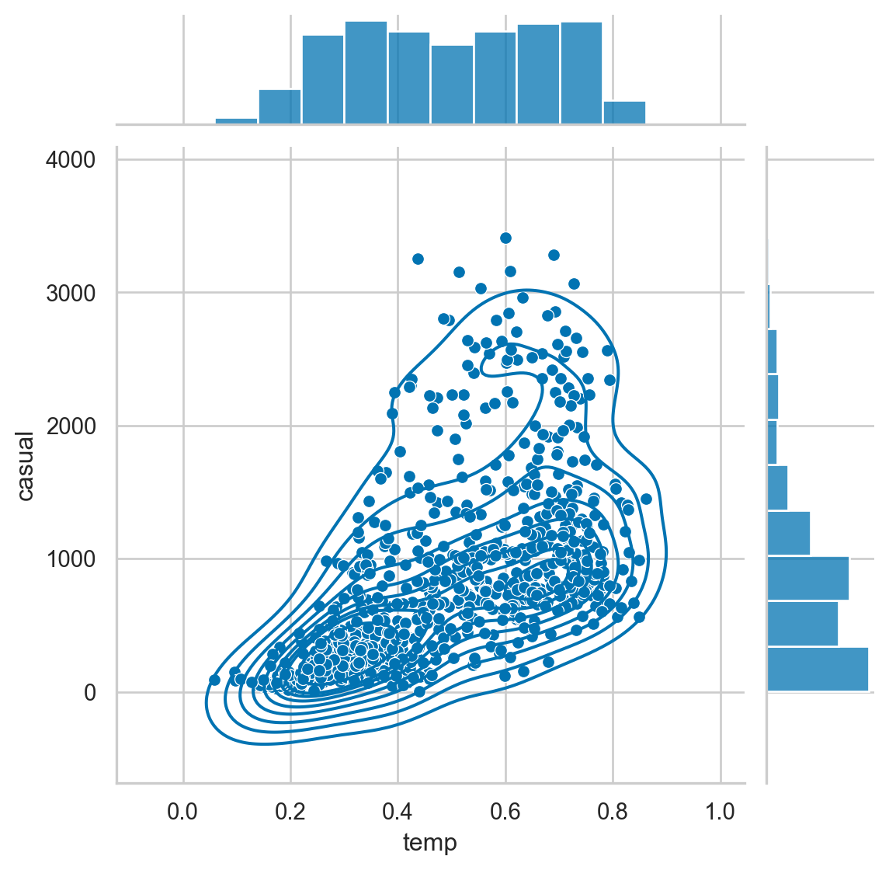

# Importing the course packages
import pandas as pd
import numpy as np
import matplotlib.pyplot as plt
import seaborn as sns
# Importing the course datasets
bike_share = pd.read_csv('datasets/bike_share.csv')
college_data = pd.read_csv('datasets/college_datav3.csv')
daily_show = pd.read_csv('datasets/daily_show_guests_cleaned.csv')
insurance = pd.read_csv('datasets/insurance_premiums.csv')
grants = pd.read_csv('datasets/schoolimprovement2010grants.csv', index_col=0)Intermediate Data Visualization with Seaborn
Run the hidden code cell below to import the data used in this course.
Explore Datasets
Use the DataFrames imported in the first cell to explore the data and practice your skills! - Use lmplot() to look at the relationship between temp and total_rentals from bike_share. Plot two regression lines for working and non-working days (workingday). - Create a heat map from daily_show to see how the types of guests (Group) have changed yearly. - Explore the variables from insurance and their relationship by creating pairwise plots and experimenting with different variables and types of plots. Additionally, you can use color to segment visually for region. - Make sure to add titles and labels to your plots and adjust their format for readability!
Reading a csv file
Before you analyze data, you will need to read the data into a pandas DataFrame. In this exercise, you will be looking at data from US School Improvement Grants in 2010. This program gave nearly $4B to schools to help them renovate or improve their programs.
This first step in most data analysis is to import pandas and seaborn and read a data file in order to analyze it further.
This course introduces a lot of new concepts, so if you ever need a quick refresher, download the Seaborn Cheat Sheet and keep it handy!
Instructions
- Import pandas and seaborn using the standard naming conventions. - The path to the csv file is stored in the grant_file variable. - Use pandas to read the file. - Store the resulting DataFrame in the variable df.
grant_file="datasets/schoolimprovement2010grants.csv"
# import all modules
import pandas as pd
import seaborn as sns
import matplotlib.pyplot as plt
# Read in the DataFrame
df = pd.read_csv(grant_file)
df.head(3)| Unnamed: 0 | School Name | City | State | District Name | Model Selected | Award_Amount | Region | |
|---|---|---|---|---|---|---|---|---|
| 0 | 0 | HOGARTH KINGEEKUK MEMORIAL SCHOOL | SAVOONGA | AK | BERING STRAIT SCHOOL DISTRICT | Transformation | 471014 | West |
| 1 | 1 | AKIACHAK SCHOOL | AKIACHAK | AK | YUPIIT SCHOOL DISTRICT | Transformation | 520579 | West |
| 2 | 2 | GAMBELL SCHOOL | GAMBELL | AK | BERING STRAIT SCHOOL DISTRICT | Transformation | 449592 | West |
Comparing a histogram and displot
The pandas library supports simple plotting of data, which is very convenient when data is already likely to be in a pandas DataFrame.
Seaborn generally does more statistical analysis on data and can provide more sophisticated insight into the data. In this exercise, we will compare a pandas histogram vs the seaborn displot. ## Instructions - Use the pandas’ plot.hist() function to plot a histogram of the Award_Amount column. - Use Seaborn’s displot() function to plot a distribution plot of the same column.
# Display pandas histogram
df['Award_Amount'].plot.hist()
plt.show()
# Clear out the pandas histogram
plt.clf()
# Display a Seaborn displot
sns.displot(df['Award_Amount'])
plt.show()
# Clear the displot
plt.clf()<Figure size 672x480 with 0 Axes><Figure size 672x480 with 0 Axes>Plot a histogram
The displot() function will return a histogram by default. The displot() can also create a KDE or rug plot which are useful ways to look at the data. Seaborn can also combine these plots so you can perform more meaningful analysis.
Instructions
- Create a displot for the data. - Explicitly pass in the number 20 for the number of bins in the histogram. - Display the plot using plt.show().
# Create a displot
sns.displot(df['Award_Amount'],
bins=20)
# Display the plot
plt.show()Rug plot and kde shading
Now that you understand some function arguments for displot(), we can continue further refining the output. This process of creating a visualization and updating it in an incremental fashion is a useful and common approach to look at data from multiple perspectives.
Seaborn excels at making this process simple.
Instructions
- Create a displot of the Award_Amount column in the df. - Configure it to show a shaded kde plot (using the kind and fill parameters). - Add a rug plot above the x axis (using the rug parameter). - Display the plot.
# Create a displot of the Award Amount
sns.displot(df['Award_Amount'],
kind='kde',
rug=True,
fill=True)
# Plot the results
plt.show()
Create a regression plot
For this set of exercises, we will be looking at FiveThirtyEight’s data on which US State has the worst drivers. The data set includes summary level information about fatal accidents as well as insurance premiums for each state as of 2010.
In this exercise, we will look at the difference between the regression plotting functions.
Instructions
- The data is available in the dataframe called df. - Create a regression plot using regplot() with “insurance_losses” on the x axis and “premiums” on the y axis. - Create a regression plot of “premiums” versus “insurance_losses” using lmplot(). Display the plot.
df=pd.read_csv("datasets/insurance_premiums.csv")
# Create a regression plot of premiums vs. insurance_losses
sns.regplot(data=df, x='insurance_losses', y='premiums')
# Display the plot
plt.show()# Create an lmplot of premiums vs. insurance_losses
sns.lmplot(data=df,x='insurance_losses',y='premiums')
# Display the second plot
plt.show()Plotting multiple variables
Since we are using lmplot() now, we can look at the more complex interactions of data. This data set includes geographic information by state and area. It might be interesting to see if there is a difference in relationships based on the Region of the country.
Instructions
- Use lmplot() to look at the relationship between insurance_losses and premiums. - Plot a regression line for each Region of the country.
# Create a regression plot using hue
sns.lmplot(data=df,
x="insurance_losses",
y="premiums",
hue="Region")
# Show the results
plt.show()Facetting multiple regressions
lmplot() allows us to facet the data across multiple rows and columns. In the previous plot, the multiple lines were difficult to read in one plot. We can try creating multiple plots by Region to see if that is a more useful visualization.
Instructions
- Use lmplot() to look at the relationship between insurance_losses and premiums. - Create a plot for each Region of the country. - Display the plots across multiple rows.
# Create a regression plot with multiple rows
sns.lmplot(data=df,
x="insurance_losses",
y="premiums",
row="Region")
# Show the plot
plt.show()Theme examples with sns.set_style()
for style in ['white','dark','whitegrid','darkgrid','ticks']:
sns.set_style(style)
sns.displot(df['premiums'])
plt.show()
Setting the default style
For these exercises, we will be looking at fair market rent values calculated by the US Housing and Urban Development Department. This data is used to calculate guidelines for several federal programs. The actual values for rents vary greatly across the US. We can use this data to get some experience with configuring Seaborn plots.
All of the necessary imports for seaborn, pandas and matplotlib have been completed. The data is stored in the pandas DataFrame df.
By the way, if you haven’t downloaded it already, check out the Seaborn Cheat Sheet. It includes an overview of the most important concepts, functions and methods and might come in handy if you ever need a quick refresher!
Instructions
- Plot a pandas histogram without adjusting the style. - Set Seaborn’s default style. - Create another pandas histogram of the fmr_2 column which represents fair market rent for a 2-bedroom apartment.
# Plot the pandas histogram
df['premiums'].plot.hist()
plt.show()
plt.clf()
# Set the default seaborn style
sns.set()
# Plot the pandas histogram again
df['premiums'].plot.hist()
plt.show()
plt.clf()<Figure size 672x480 with 0 Axes>Comparing styles
Seaborn supports setting different styles that can control the aesthetics of the final plot. In this exercise, you will plot the same data in two different styles in order to see how the styles change the output.
Instructions
- Create a displot() of the fmr_2 column in df using a dark style. Use plt.clf() to clear the figure. - Create the same displot() of fmr_2 using a whitegrid style. Clear the plot after showing it.
sns.set_style('dark')
sns.displot(df['premiums'])
plt.show()
plt.clf()
sns.set_style('whitegrid')
sns.displot(df['premiums'])
plt.show()
plt.clf()
<Figure size 672x480 with 0 Axes>
<Figure size 672x480 with 0 Axes>Removing spines
In general, visualizations should minimize extraneous markings so that the data speaks for itself. Seaborn allows you to remove the lines on the top, bottom, left and right axis, which are often called spines.
Instructions
- Use a white style for the plot. - Create a lmplot() comparing the pop2010 and the fmr_2 columns. - Remove the top and right spines using despine().
df.head(2)
# Set the style to white
sns.set_style('white')
# Create a regression plot
sns.lmplot(data=df,
x='premiums',
y='insurance_losses')
# Remove the spines
sns.despine()
# Show the plot and clear the figure
plt.show()
plt.clf()
<Figure size 672x480 with 0 Axes>Colors in Seaborn
Defining a color for a plot
df=college_data
sns.set(color_codes=True)
sns.displot(df['Tuition'], color='g')Palettes
palettes = ['deep', 'muted', 'pastel', 'bright', 'dark','colorblind']
for p in palettes:
sns.set_palette(p)
sns.displot(df['Tuition'])
Displaying Palettes
palettes = ['deep', 'muted', 'pastel', 'bright','dark','colorblind']
for p in palettes:
sns.set_palette(p)
sns.palplot(sns.color_palette())
plt.show()

Matplotlib color codes
Seaborn offers several options for modifying the colors of your visualizations. The simplest approach is to explicitly state the color of the plot. A quick way to change colors is to use the standard matplotlib color codes.
Instructions
- Set the default Seaborn style and enable the matplotlib color codes. - Create a displot for the fmr_3 column using matplotlib’s magenta (m) color code.
# Set style, enable color code, and create a magenta displot
sns.set(color_codes=True)
sns.displot(df['Tuition'], color='m')
# Show the plot
plt.show()Using default palettes
Seaborn includes several default palettes that can be easily applied to your plots. In this example, we will look at the impact of two different palettes on the same displot.
Instructions
- Create a for loop to show the difference between the bright and colorblind palette. - Set the palette using the set_palette() function. - Use a displot of the fmr_3 column.
# Loop through differences between bright and colorblind palettes
for p in ['bright', 'colorblind']:
sns.set_palette(p)
sns.displot(df['Tuition'])
plt.show()
# Clear the plots
plt.clf()
<Figure size 672x480 with 0 Axes><Figure size 672x480 with 0 Axes>Creating Custom Palettes
Choosing a cohesive palette that works for your data can be time consuming. Fortunately, Seaborn provides the color_palette() function to create your own custom sequential, categorical, or diverging palettes. Seaborn also makes it easy to view your palettes by using the palplot() function.
In this exercise, you can experiment with creating different palettes.
Instructions
- Create and display a Purples sequential palette containing 8 colors. - Create and display a palette with 10 colors using the husl system. - Create and display a diverging palette with 6 colors coolwarm.
sns.palplot(sns.color_palette("Purples",8))
plt.show()
sns.palplot(sns.color_palette("husl",10))
plt.show()
sns.palplot(sns.color_palette("coolwarm",6))
plt.show()Customization with matplotlib
Matplotlib Axes
- Most customization available through matplotlib
- Axes objectsAxes can be passed to seaborn functions
fig, ax = plt.subplots()
sns.histplot(df['Tuition'], ax=ax)
ax.set(xlabel='Tuition 2013-14')Further Customizations
- The axes object supports many common customizations
fig, ax = plt.subplots()
sns.histplot(df['Tuition'], ax=ax)
ax.set(xlabel="Tuition 2013-14", ylabel="Distribution", xlim=(0, 50000), title="2013-14 Tuition and Fees Distribution")[Text(0.5, 0, 'Tuition 2013-14'),
Text(0, 0.5, 'Distribution'),
(0.0, 50000.0),
Text(0.5, 1.0, '2013-14 Tuition and Fees Distribution')]
Combining Plots
- It is possible to combine and configure multiple plots
fig, (ax0, ax1) = plt.subplots(nrows=1, ncols=2,sharey=True, figsize=(7,4))
sns.histplot(df['Tuition'], stat='density', ax=ax0)
sns.histplot(df.query('Regions == "South East"')['Tuition'], stat='density', ax=ax1)
ax1.set(xlabel='Tuition (South East)', xlim=(0, 70000))
ax1.axvline(x=20000, label='My Budget', linestyle='--')
ax1.legend()Using matplotlib axes
Seaborn uses matplotlib as the underlying library for creating plots. Most of the time, you can use the Seaborn API to modify your visualizations but sometimes it is helpful to use matplotlib’s functions to customize your plots. The most important object in this case is matplotlib’s axes.
Once you have an axes object, you can perform a lot of customization of your plot.
In these examples, the US HUD data is loaded in the dataframe df and all libraries are imported.
Instructions
- Use plt.subplots() to create a axes and figure objects. - Plot a histplot of column fmr_3 on the axes. - Set a more useful label on the x axis of “3 Bedroom Fair Market Rent”.
# Create a figure and axes
fig, ax = plt.subplots()
# Plot the distribution of data
sns.histplot(df['Tuition'], ax=ax)
# Create a more descriptive x axis label
ax.set(xlabel="Tuition fees")
# Show the plot
plt.show()Additional plot customizations
The matplotlib API supports many common customizations such as labeling axes, adding titles, and setting limits. Let’s complete another customization exercise.
Instructions
- Create a histplot of the fmr_1 column. - Modify the x axis label to say “1 Bedroom Fair Market Rent”. - Change the x axis limits to be between 100 and 1500. - Add a descriptive title of “US Rent” to the plot.
# Create a figure and axes
fig, ax = plt.subplots()
# Plot the distribution of 1 bedroom rents
sns.histplot(df['Tuition'], ax=ax)
# Modify the properties of the plot
ax.set(xlabel="Tuition",
xlim=(500,50000),
title="University Tuition fees")
# Display the plot
plt.show()Adding annotations
Each of the enhancements we have covered can be combined together. In the next exercise, we can annotate our distribution plot to include lines that show the mean and median rent prices.
For this example, the palette has been changed to bright using sns.set_palette()
Instructions
- Create a figure and axes. - Plot the fmr_1 column distribution. - Add a vertical line using axvline for the median and mean of the values which are already defined.
mean=df['Tuition'].mean()
median=df['Tuition'].median()
# Create a figure and axes. Then plot the data
fig, ax = plt.subplots()
sns.histplot(df['Tuition'], ax=ax)
# Customize the labels and limits
ax.set(xlabel="Tuition", xlim=(100,50000), title="Tuition Fees")
# Add vertical lines for the median and mean
ax.axvline(x=median, color='m', label='Median', linestyle='--', linewidth=2)
ax.axvline(x=mean, color='b', label='Mean', linestyle='-', linewidth=2)
# Show the legend and plot the data
ax.legend()
plt.show()Multiple plots
For the final exercise we will plot a comparison of the fair market rents for 1-bedroom and 2-bedroom apartments.
Instructions
- Create two axes objects, ax0 and ax1. - Plot fmr_1 on ax0 and fmr_2 on ax1. - Display the plots side by side.
# Create a plot with 1 row and 2 columns that share the y axis label
fig, (ax0, ax1) = plt.subplots(nrows=1, ncols=2, sharey=True)
# Plot the distribution of 1 bedroom apartments on ax0
sns.histplot(df['PCTPELL'], ax=ax0)
ax0.set(xlabel="PCTPELL", xlim=(0.1,0.9))
# Plot the distribution of 2 bedroom apartments on ax1
sns.histplot(df['PCTFLOAN'], ax=ax1)
ax1.set(xlabel="PCTFLOAN", xlim=(0.1,0.9))
# Display the plot
plt.show()Categorical PlotTypes
1. Categorical Plot Types
In the first two chapters of this course, we covered the basics of how to use the Seaborn API for creating and customizing plots using different Seaborn and matplotlib approaches. These chapters provide the foundation for exploring additional plot types. This lesson will focus on the many different categorical plots that Seaborn supports.
2. Categorical Data
In our earlier exercises we looked at distribution and linear regression plots, used on numerical values. Seaborn also supports many plot types with categorical data. Categorical data is data which includes a limited or fixed number of values and is most useful when combined with numeric data.
3. Plot types - show each observation
Seaborn breaks categorical data plots into three groups. The first group includes the stripplot() and the swarmplot(), which show all of the individual observations on the plot.
4. Plot types - abstract representations
The second category contains the familiar boxplot(), as well as a violinplot() and boxenplot(). These plots show an abstract representation of the categorical data.
5. Plot types - statistical estimates
The final group of plots show statistical estimates of the categorical variables. The barplot() and pointplot() contain useful summaries of data. The countplot() shows the number of instances of each observation.
6. Plots of each observation - stripplot
Seaborn’s stripplot() shows every observation in the dataset. In some cases, it can be difficult to see individual data points. We can use the jitter parameter in order to more easily see how the Average Covered Charges vary by Diagnostic Reimbursement Code.
7. Plots of each observation - swarmplot
We can plot a more sophisticated visualization of all the data using a swarmplot(). This plot uses a complex algorithm to place the observations in a manner where they do not overlap. The downside of this approach is that the swarmplot() does not scale well to large datasets.
8. Abstract representations - boxplot
The next category of plots show abstract representations of the data. A boxplot() is the most common of this type. This plot is used to show several measures related to the distribution of the data, including the median, upper and lower quartiles, as well as outliers.
9. Abstract representation - violinplot
The violinplot() is a combination of a kernel density plot and a box plot and can be suitable for providing an alternative view of the distribution of data. Because the plot uses a kernel density calculation it does not show all data points. This can be useful for displaying large datasets but it can be computationally intensive to create.
10. Abstract representation - boxenplot
The final plot in the grouping is the boxenplot(), which is an enhanced box plot. The API is the same as the boxplot() and violinplot() but can scale more effectively to large datasets. The boxenplot() is a hybrid between a boxplot() and a violinplot() and is relatively quick to render and easy to interpret.
11. Statistical estimates - barplot
The final category of plots are statistical estimates of the data. The barplot() shows an estimate of the value as well as a confidence interval. In this example, we include the hue parameter described in Chapter 1, which provides another useful way for us to look at this categorical data.
12. Statistical estimates - pointplot
The pointplot() is similar to the barplot() in that it shows a summary measure and confidence interval. A pointplot() can be very useful for observing how values change across categorical values.
13. Statistical estimates - countplot
The final categorical plot is the countplot(), which displays the number of instances of each variable.
Plots of each observation - stripplot
df=insurance
df.head()| State | fatal_collisions | fatal_collisions_speeding | fatal_collisions_alc | fatal_collisions_not_distracted | fatal_collisions_no_hist | premiums | insurance_losses | Region | |
|---|---|---|---|---|---|---|---|---|---|
| 0 | Alabama | 18.8 | 39 | 30 | 96 | 80 | 784.55 | 145.08 | South |
| 1 | Alaska | 18.1 | 41 | 25 | 90 | 94 | 1053.48 | 133.93 | West |
| 2 | Arizona | 18.6 | 35 | 28 | 84 | 96 | 899.47 | 110.35 | West |
| 3 | Arkansas | 22.4 | 18 | 26 | 94 | 95 | 827.34 | 142.39 | South |
| 4 | California | 12.0 | 35 | 28 | 91 | 89 | 878.41 | 165.63 | West |
sns.stripplot(data=df, y="Region", x="insurance_losses", jitter=True)Plots of each observation - swarmplot
sns.swarmplot(data=df, y="Region", x="insurance_losses")Abstract representations - boxplot
sns.boxplot(data=df, y="Region", x="insurance_losses")Abstract representation - violinplot
sns.violinplot(data=df, y="Region", x="insurance_losses")Abstract representation - boxenplot
sns.boxenplot(data=df, y="Region", x="insurance_losses")Statistical estimates - barplot
sns.barplot(data=df, y="Region", x="insurance_losses")#,hue='State')Statistical estimates - pointplot
sns.pointplot(data=df, y="Region", x="insurance_losses")#,hue='State')
stripplot() and swarmplot()
Many datasets have categorical data and Seaborn supports several useful plot types for this data. In this example, we will continue to look at the 2010 School Improvement data and segment the data by the types of school improvement models used.
As a refresher, here is the KDE distribution of the Award Amounts:
While this plot is useful, there is a lot more we can learn by looking at the individual Award_Amount and how the amounts are distributed among the four categories.
Instructions
- Create a stripplot of the Award_Amount with the Model Selected on the y axis with jitter enabled. - Create a swarmplot() of the same data, but also include the hue by Region.
df=college_data
print(df.columns)Index(['INSTNM', 'OPEID', 'REGION', 'SAT_AVG_ALL', 'PCTPELL', 'PCTFLOAN',
'ADM_RATE_ALL', 'UG', 'AVGFACSAL', 'COMPL_RPY_5YR_RT', 'DEBT_MDN',
'MEDIAN_HH_INC', 'ICLEVEL', 'HIGHDEG', 'CONTROL', 'WOMENONLY',
'MENONLY', 'LOCALE', 'Tuition', 'Degree_Type', 'Ownership', 'Regions',
'Locales', 'Locale_Short'],
dtype='object')df.head()| INSTNM | OPEID | REGION | SAT_AVG_ALL | PCTPELL | PCTFLOAN | ADM_RATE_ALL | UG | AVGFACSAL | COMPL_RPY_5YR_RT | ... | CONTROL | WOMENONLY | MENONLY | LOCALE | Tuition | Degree_Type | Ownership | Regions | Locales | Locale_Short | |
|---|---|---|---|---|---|---|---|---|---|---|---|---|---|---|---|---|---|---|---|---|---|
| 0 | Alabama A & M University | 100200 | 5 | 850.0 | 0.7249 | 0.8159 | 0.653841 | 4380.0 | 7017.0 | 0.477631579 | ... | 1 | 0.0 | 0.0 | 12.0 | 13435.0 | Graduate | Public | South East | City: Midsize | City |
| 1 | University of Alabama at Birmingham | 105200 | 5 | 1147.0 | 0.3505 | 0.5218 | 0.604275 | 10331.0 | 10221.0 | 0.673230442 | ... | 1 | 0.0 | 0.0 | 12.0 | 16023.0 | Graduate | Public | South East | City: Midsize | City |
| 2 | Amridge University | 2503400 | 5 | NaN | 0.7455 | 0.8781 | NaN | 98.0 | 3217.0 | 0.636363636 | ... | 2 | 0.0 | 0.0 | 12.0 | 8862.0 | Graduate | Private non-profit | South East | City: Midsize | City |
| 3 | University of Alabama in Huntsville | 105500 | 5 | 1221.0 | 0.3179 | 0.4589 | 0.811971 | 5220.0 | 9514.0 | 0.762222222 | ... | 1 | 0.0 | 0.0 | 12.0 | 18661.0 | Graduate | Public | South East | City: Midsize | City |
| 4 | Alabama State University | 100500 | 5 | 844.0 | 0.7567 | 0.7692 | 0.463858 | 4348.0 | 7940.0 | 0.43006993 | ... | 1 | 0.0 | 0.0 | 12.0 | 7400.0 | Graduate | Public | South East | City: Midsize | City |
5 rows × 24 columns
# Create the stripplot
sns.stripplot(data=df,
x='Tuition',
y='Regions',
jitter=True
)
plt.show()# Create the stripplot
sns.swarmplot(data=df,
x='Tuition',
y='Regions',
hue='Ownership'
)
plt.show()/Users/00110139/miniforge3/envs/TF2/lib/python3.9/site-packages/seaborn/categorical.py:3399: UserWarning: 90.9% of the points cannot be placed; you may want to decrease the size of the markers or use stripplot.
warnings.warn(msg, UserWarning)
/Users/00110139/miniforge3/envs/TF2/lib/python3.9/site-packages/seaborn/categorical.py:3399: UserWarning: 82.5% of the points cannot be placed; you may want to decrease the size of the markers or use stripplot.
warnings.warn(msg, UserWarning)
/Users/00110139/miniforge3/envs/TF2/lib/python3.9/site-packages/seaborn/categorical.py:3399: UserWarning: 82.7% of the points cannot be placed; you may want to decrease the size of the markers or use stripplot.
warnings.warn(msg, UserWarning)
/Users/00110139/miniforge3/envs/TF2/lib/python3.9/site-packages/seaborn/categorical.py:3399: UserWarning: 81.2% of the points cannot be placed; you may want to decrease the size of the markers or use stripplot.
warnings.warn(msg, UserWarning)
/Users/00110139/miniforge3/envs/TF2/lib/python3.9/site-packages/seaborn/categorical.py:3399: UserWarning: 60.8% of the points cannot be placed; you may want to decrease the size of the markers or use stripplot.
warnings.warn(msg, UserWarning)
/Users/00110139/miniforge3/envs/TF2/lib/python3.9/site-packages/seaborn/categorical.py:3399: UserWarning: 65.8% of the points cannot be placed; you may want to decrease the size of the markers or use stripplot.
warnings.warn(msg, UserWarning)
/Users/00110139/miniforge3/envs/TF2/lib/python3.9/site-packages/seaborn/categorical.py:3399: UserWarning: 86.8% of the points cannot be placed; you may want to decrease the size of the markers or use stripplot.
warnings.warn(msg, UserWarning)
/Users/00110139/miniforge3/envs/TF2/lib/python3.9/site-packages/seaborn/categorical.py:3399: UserWarning: 85.9% of the points cannot be placed; you may want to decrease the size of the markers or use stripplot.
warnings.warn(msg, UserWarning)
/Users/00110139/miniforge3/envs/TF2/lib/python3.9/site-packages/seaborn/categorical.py:3399: UserWarning: 70.4% of the points cannot be placed; you may want to decrease the size of the markers or use stripplot.
warnings.warn(msg, UserWarning)
/Users/00110139/miniforge3/envs/TF2/lib/python3.9/site-packages/seaborn/categorical.py:3399: UserWarning: 91.1% of the points cannot be placed; you may want to decrease the size of the markers or use stripplot.
warnings.warn(msg, UserWarning)
/Users/00110139/miniforge3/envs/TF2/lib/python3.9/site-packages/seaborn/categorical.py:3399: UserWarning: 82.6% of the points cannot be placed; you may want to decrease the size of the markers or use stripplot.
warnings.warn(msg, UserWarning)
/Users/00110139/miniforge3/envs/TF2/lib/python3.9/site-packages/seaborn/categorical.py:3399: UserWarning: 83.1% of the points cannot be placed; you may want to decrease the size of the markers or use stripplot.
warnings.warn(msg, UserWarning)
/Users/00110139/miniforge3/envs/TF2/lib/python3.9/site-packages/seaborn/categorical.py:3399: UserWarning: 81.4% of the points cannot be placed; you may want to decrease the size of the markers or use stripplot.
warnings.warn(msg, UserWarning)
/Users/00110139/miniforge3/envs/TF2/lib/python3.9/site-packages/seaborn/categorical.py:3399: UserWarning: 61.2% of the points cannot be placed; you may want to decrease the size of the markers or use stripplot.
warnings.warn(msg, UserWarning)
/Users/00110139/miniforge3/envs/TF2/lib/python3.9/site-packages/seaborn/categorical.py:3399: UserWarning: 66.4% of the points cannot be placed; you may want to decrease the size of the markers or use stripplot.
warnings.warn(msg, UserWarning)
/Users/00110139/miniforge3/envs/TF2/lib/python3.9/site-packages/seaborn/categorical.py:3399: UserWarning: 87.1% of the points cannot be placed; you may want to decrease the size of the markers or use stripplot.
warnings.warn(msg, UserWarning)boxplots, violinplots and boxenplots
Seaborn’s categorical plots also support several abstract representations of data. The API for each of these is the same so it is very convenient to try each plot and see if the data lends itself to one over the other.
In this exercise, we will use the color palette options presented in Chapter 2 to show how colors can easily be included in the plots.
Instructions
- Create and display a boxplot of the data with Award_Amount on the x axis and Model Selected on the y axis.
- Use Award_Amount on the x axis and Model Selected on the y axis. - Create and display an boxenplot using the Paired palette and the Region column as the hue.
# Read in the DataFrame
df_grant = pd.read_csv("datasets/schoolimprovement2010grants.csv")
# Create a boxplot
sns.boxplot(data=df_grant,
x='Award_Amount',
y='Model Selected')
plt.show()
plt.clf()
# Create a violinplot with the husl palette
sns.violinplot(data=df_grant,
x='Award_Amount',
y='Model Selected',
palette='husl')
plt.show()
plt.clf()
# Create a boxenplot with the Paired palette and the Region column as the hue
sns.boxenplot(data=df_grant,
x='Award_Amount',
y='Model Selected',
palette='Paired',
hue='Region')
plt.show()
plt.clf()
/var/folders/53/yp3kynfd7rn5y13c2wwfm33rmgtrfb/T/ipykernel_38419/1096742578.py:12: FutureWarning:
Passing `palette` without assigning `hue` is deprecated and will be removed in v0.14.0. Assign the `y` variable to `hue` and set `legend=False` for the same effect.
sns.violinplot(data=df_grant,<Figure size 672x480 with 0 Axes>barplots, pointplots and countplots
The final group of categorical plots are barplots, pointplots and countplot which create statistical summaries of the data. The plots follow a similar API as the other plots and allow further customization for the specific problem at hand.
Instructions
- Create a countplot with the df dataframe and Model Selected on the y axis and the color varying by Region. - Create a pointplot with the df dataframe and Model Selected on the x-axis and Award_Amount on the y-axis. Use a capsize in the pointplot in order to add caps to the error bars. - Create a barplot with the same data on the x and y axis and change the color of each bar based on the Region column.
'''
# Show a countplot with the number of models used with each region a different color
sns.countplot(data=df,
y="Model Selected",
hue="Region")
plt.show()
plt.clf()
# Create a pointplot and include the capsize in order to show caps on the error bars
sns.pointplot(data=df,
y='Award_Amount',
x='Model Selected',
capsize=.1)
plt.show()
plt.clf()
# Create a barplot with each Region shown as a different color
sns.barplot(data=df,
y='Award_Amount',
x='Model Selected',
hue='Region')
plt.show()
plt.clf()
''''\n# Show a countplot with the number of models used with each region a different color\nsns.countplot(data=df,\n y="Model Selected",\n hue="Region")\n\nplt.show()\nplt.clf()\n\n# Create a pointplot and include the capsize in order to show caps on the error bars\nsns.pointplot(data=df,\n y=\'Award_Amount\',\n x=\'Model Selected\',\n capsize=.1)\n\nplt.show()\nplt.clf()\n\n# Create a barplot with each Region shown as a different color\nsns.barplot(data=df,\n y=\'Award_Amount\',\n x=\'Model Selected\',\n hue=\'Region\')\n\nplt.show()\nplt.clf()\n'Regression and residual plots
Linear regression is a useful tool for understanding the relationship between numerical variables. Seaborn has simple but powerful tools for examining these relationships.
For these exercises, we will look at some details from the US Department of Education on 4 year college tuition information and see if there are any interesting insights into which variables might help predict tuition costs.
For these exercises, all data is loaded in the df variable.
Instructions
- Plot a regression plot comparing Tuition and average SAT scores(SAT_AVG_ALL). Make sure the values are shown as green triangles. - Use a residual plot to determine if the relationship looks linear.
df = college_data
df.head(3)| INSTNM | OPEID | REGION | SAT_AVG_ALL | PCTPELL | PCTFLOAN | ADM_RATE_ALL | UG | AVGFACSAL | COMPL_RPY_5YR_RT | ... | CONTROL | WOMENONLY | MENONLY | LOCALE | Tuition | Degree_Type | Ownership | Regions | Locales | Locale_Short | |
|---|---|---|---|---|---|---|---|---|---|---|---|---|---|---|---|---|---|---|---|---|---|
| 0 | Alabama A & M University | 100200 | 5 | 850.0 | 0.7249 | 0.8159 | 0.653841 | 4380.0 | 7017.0 | 0.477631579 | ... | 1 | 0.0 | 0.0 | 12.0 | 13435.0 | Graduate | Public | South East | City: Midsize | City |
| 1 | University of Alabama at Birmingham | 105200 | 5 | 1147.0 | 0.3505 | 0.5218 | 0.604275 | 10331.0 | 10221.0 | 0.673230442 | ... | 1 | 0.0 | 0.0 | 12.0 | 16023.0 | Graduate | Public | South East | City: Midsize | City |
| 2 | Amridge University | 2503400 | 5 | NaN | 0.7455 | 0.8781 | NaN | 98.0 | 3217.0 | 0.636363636 | ... | 2 | 0.0 | 0.0 | 12.0 | 8862.0 | Graduate | Private non-profit | South East | City: Midsize | City |
3 rows × 24 columns
# Display a regression plot for Tuition
sns.regplot(data=df,
y='Tuition',
x='SAT_AVG_ALL',
marker='^',
color='g')
plt.show()
plt.clf()
# Display the residual plot
sns.residplot(data=df,
y='Tuition',
x='SAT_AVG_ALL',
color='g')
plt.show()
plt.clf()<Figure size 672x480 with 0 Axes>Regression plot parameters
Seaborn’s regression plot supports several parameters that can be used to configure the plots and drive more insight into the data.
For the next exercise, we can look at the relationship between tuition and the percent of students that receive Pell grants. A Pell grant is based on student financial need and subsidized by the US Government. In this data set, each University has some percentage of students that receive these grants. Since this data is continuous, using x_bins can be useful to break the percentages into categories in order to summarize and understand the data.
Instructions
- Plot a regression plot of Tuition and PCTPELL. - Create another plot that breaks the PCTPELL column into 5 different bins. -
# Plot a regression plot of Tuition and the Percentage of Pell Grants
sns.regplot(data=df,
y='Tuition',
x='PCTPELL')
plt.show()
plt.clf()
# Create another plot that estimates the tuition by PCTPELL
sns.regplot(data=df,
y='Tuition',
x='PCTPELL',
x_bins=5)
plt.show()
plt.clf()
# The final plot should include a line using a 2nd order polynomial
sns.regplot(data=df,
y='Tuition',
x='PCTPELL',
x_bins=5,
order=2)
plt.show()
plt.clf()<Figure size 672x480 with 0 Axes>Binning data
When the data on the x axis is a continuous value, it can be useful to break it into different bins in order to get a better visualization of the changes in the data.
For this exercise, we will look at the relationship between tuition and the Undergraduate population abbreviated as UG in this data. We will start by looking at a scatter plot of the data and examining the impact of different bin sizes on the visualization.
Instructions
- Create a regplot of Tuition and UG and set the fit_reg parameter to False to disable the regression line. - Create another plot with the UG data divided into 5 bins. - Create a regplot() with the data divided into 8 bins.
# Create a scatter plot by disabling the regression line
sns.regplot(data=df,
y='Tuition',
x='UG',
fit_reg=False)
plt.show()
plt.clf()
# Create a scatter plot and bin the data into 5 bins
sns.regplot(data=df,
y='Tuition',
x='UG',
x_bins=5)
plt.show()
plt.clf()
# Create a regplot and bin the data into 8 bins
sns.regplot(data=df,
y='Tuition',
x='UG',
x_bins=8)
plt.show()
plt.clf()<Figure size 672x480 with 0 Axes>Creating heatmaps
A heatmap is a common matrix plot that can be used to graphically summarize the relationship between two variables. For this exercise, we will start by looking at guests of the Daily Show from 1999 - 2015 and see how the occupations of the guests have changed over time.
The data includes the date of each guest appearance as well as their occupation. For the first exercise, we need to get the data into the right format for Seaborn’s heatmap function to correctly plot the data. All of the data has already been read into the df variable.
Instructions
- Use pandas’ crosstab() function to build a table of visits by Group and Year. - Print the pd_crosstab DataFrame. - Plot the data using Seaborn’s heatmap().
df=daily_show
# Create a crosstab table of the data
pd_crosstab = pd.crosstab(df["Group"], df["YEAR"])
print(pd_crosstab)
# Plot a heatmap of the table
sns.heatmap(pd_crosstab)
# Rotate tick marks for visibility
plt.yticks(rotation=0)
plt.xticks(rotation=90)
plt.show()YEAR 1999 2000 2001 2002 2003 2004 2005 2006 2007 2008 \
Group
Academic 0 0 2 0 4 1 12 9 13 5
Acting 108 100 92 84 74 51 44 44 25 26
Advocacy 0 1 0 1 0 4 0 0 2 3
Athletics 0 3 1 2 0 2 2 5 4 1
Business 0 1 0 0 0 2 1 1 2 1
Clergy 0 0 0 1 1 1 0 0 1 0
Comedy 25 12 11 5 12 7 5 8 9 7
Consultant 0 0 0 0 1 4 1 4 2 3
Government 0 0 2 1 2 3 1 3 1 0
Media 11 21 31 42 41 45 54 47 47 77
Military 0 0 0 0 0 0 1 1 3 1
Misc 0 0 2 1 1 0 4 3 2 2
Musician 17 13 11 10 7 5 11 6 2 1
Political Aide 0 1 1 2 1 2 3 3 2 6
Politician 2 13 3 8 14 32 22 25 21 27
Science 0 0 0 0 1 2 1 1 4 1
YEAR 2009 2010 2011 2012 2013 2014 2015
Group
Academic 11 8 10 8 8 10 2
Acting 22 45 42 33 60 47 33
Advocacy 1 1 1 2 2 3 3
Athletics 7 5 2 7 4 4 3
Business 4 2 3 3 3 1 1
Clergy 1 0 1 2 0 0 0
Comedy 7 7 7 6 6 9 7
Consultant 2 1 0 0 0 0 0
Government 5 3 3 3 7 6 0
Media 59 50 51 52 51 53 24
Military 1 2 3 1 1 1 1
Misc 5 4 5 6 2 5 3
Musician 5 6 6 5 5 8 5
Political Aide 3 2 1 1 3 2 3
Politician 26 25 23 29 11 13 14
Science 4 3 5 2 2 1 1 
Customizing heatmaps
Seaborn supports several types of additional customizations to improve the output of a heatmap. For this exercise, we will continue to use the Daily Show data that is stored in the df variable but we will customize the output.
Instructions
- Create a crosstab table of Group and YEAR - Create a heatmap of the data using the BuGn palette - Disable the cbar and increase the linewidth to 0.3
# Create the crosstab DataFrame
pd_crosstab = pd.crosstab(df["Group"], df["YEAR"])
# Plot a heatmap of the table with no color bar and using the BuGn palette
sns.heatmap(pd_crosstab, cbar=False, cmap="BuGn", linewidths=0.3)
# Rotate tick marks for visibility
plt.yticks(rotation=0)
plt.xticks(rotation=90)
#Show the plot
plt.show()
plt.clf()<Figure size 672x480 with 0 Axes>Building a FacetGrid
Seaborn’s FacetGrid is the foundation for building data-aware grids. A data-aware grid allows you to create a series of small plots that can be useful for understanding complex data relationships.
For these exercises, we will continue to look at the College Scorecard Data from the US Department of Education. This rich dataset has many interesting data elements that we can plot with Seaborn.
When building a FacetGrid, there are two steps:
Create a FacetGrid object with columns, rows, or hue.
Map individual plots to the grid.Instructions
- Create a FacetGrid that shows a point plot of the Average SAT scores SAT_AVG_ALL.
- Use row_order to control the display order of the degree types.
df=college_data
# Create FacetGrid with Degree_Type and specify the order of the rows using row_order
g2 = sns.FacetGrid(df,
row="Degree_Type",
row_order=['Graduate', 'Bachelors', 'Associates', 'Certificate'])
# Map a pointplot of SAT_AVG_ALL onto the grid
g2.map(sns.pointplot, 'SAT_AVG_ALL')
# Show the plot
plt.show()
plt.clf()/Users/00110139/miniforge3/envs/TF2/lib/python3.9/site-packages/seaborn/axisgrid.py:718: UserWarning: Using the pointplot function without specifying `order` is likely to produce an incorrect plot.
warnings.warn(warning)
<Figure size 672x480 with 0 Axes>Using a catplot
In many cases, Seaborn’s catplot() can be a simpler way to create a FacetGrid. Instead of creating a grid and mapping the plot, we can use the catplot() to create a plot with one line of code.
For this exercise, we will recreate one of the plots from the previous exercise using catplot() and show how to create a boxplot on a data-aware grid. Instructions - Create a catplot() that contains a boxplot (box) of Tuition values varying by Degree_Type across rows. - Create a catplot() of SAT Averages (SAT_AVG_ALL) facetted across Degree_Type that shows a pointplot (point). Use row_order to order the degrees from highest to lowest level.
# Create a factor plot that contains boxplots of Tuition values
sns.catplot(data=df,
x='Tuition',
kind='box',
row='Degree_Type')
plt.show()
plt.clf()
# Create a facetted pointplot of Average SAT_AVG_ALL scores facetted by Degree Type
sns.catplot(data=df,
x='SAT_AVG_ALL',
kind='point',
row='Degree_Type',
row_order=['Graduate', 'Bachelors', 'Associates', 'Certificate'])
plt.show()
plt.clf()<Figure size 672x480 with 0 Axes><Figure size 672x480 with 0 Axes>Using a lmplot
The lmplot is used to plot scatter plots with regression lines on FacetGrid objects. The API is similar to catplot with the difference that the default behavior of lmplot is to plot regression lines.
For the first set of exercises, we will look at the Undergraduate population (UG) and compare it to the percentage of students receiving Pell Grants (PCTPELL).
For the second lmplot exercise, we can look at the relationships between Average SAT scores and Tuition across the different degree types and public vs. non-profit schools.
Instructions
- Create a FacetGrid() with Degree_Type columns and scatter plot of UG and PCTPELL. - Create a lmplot() using the same values from the FacetGrid(). - Create a facetted lmplot() comparing SAT_AVG_ALL to Tuition with columns varying by Ownership and rows by Degree_Type. In the lmplot() add a hue for Women Only Universities.
df.columnsIndex(['INSTNM', 'OPEID', 'REGION', 'SAT_AVG_ALL', 'PCTPELL', 'PCTFLOAN',
'ADM_RATE_ALL', 'UG', 'AVGFACSAL', 'COMPL_RPY_5YR_RT', 'DEBT_MDN',
'MEDIAN_HH_INC', 'ICLEVEL', 'HIGHDEG', 'CONTROL', 'WOMENONLY',
'MENONLY', 'LOCALE', 'Tuition', 'Degree_Type', 'Ownership', 'Regions',
'Locales', 'Locale_Short'],
dtype='object')df = college_data
degree_ord =['Graduate', 'Bachelors', 'Associates']
# Create a FacetGrid varying by column and columns ordered with the degree_order variable
g = sns.FacetGrid(df, col="Degree_Type", col_order=degree_ord)
# Map a scatter plot of Undergrad Population compared to PCTPELL
g.map(plt.scatter, 'UG', 'PCTPELL')
plt.show()
plt.clf()
# Re-create the previous plot as an lmplot
sns.lmplot(data=df,
x='UG',
y='PCTPELL',
col="Degree_Type",
col_order=degree_ord)
plt.show()
plt.clf()
inst_ord = ['Public', 'Private non-profit']
# Create an lmplot that has a column for Ownership, a row for Degree_Type and hue based on the WOMENONLY column
sns.lmplot(data=df,
x='SAT_AVG_ALL',
y='Tuition',
col="Ownership",
row='Degree_Type',
row_order=['Graduate', 'Bachelors'],
hue='WOMENONLY',
col_order=inst_ord)
plt.show()
plt.clf()
# Create an lmplot that has a column for Ownership, a row for Degree_Type and hue based on the WOMENONLY column
sns.lmplot(data=df,
x='SAT_AVG_ALL',
y='Tuition',
col="Ownership",
row='Degree_Type',
row_order=['Graduate', 'Bachelors'],
hue='WOMENONLY',
col_order=inst_ord)
plt.show()
plt.clf()<Figure size 672x480 with 0 Axes><Figure size 672x480 with 0 Axes>
<Figure size 672x480 with 0 Axes><Figure size 672x480 with 0 Axes>Building a PairGrid
When exploring a dataset, one of the earliest tasks is exploring the relationship between pairs of variables. This step is normally a precursor to additional investigation.
Seaborn supports this pair-wise analysis using the PairGrid. In this exercise, we will look at the Car Insurance Premium data we analyzed in Chapter 1. All data is available in the df variable.
Instructions
- Compare “fatal_collisions” to “premiums” by using a scatter plot mapped to a PairGrid(). - Create another PairGrid but plot a histogram on the diagonal and scatter plot on the off diagonal.
df=insurance
# Create a PairGrid with a scatter plot for fatal_collisions and premiums
g = sns.PairGrid(df, vars=["fatal_collisions", "premiums"])
g2 = g.map(sns.scatterplot)
plt.show()
plt.clf()
# Create the same PairGrid but map a histogram on the diag
g = sns.PairGrid(df, vars=["fatal_collisions", "premiums"])
g2 = g.map_diag(sns.histplot)
g3 = g2.map_offdiag(sns.scatterplot)
plt.show()
plt.clf()<Figure size 672x480 with 0 Axes><Figure size 672x480 with 0 Axes>Using a pairplot
The pairplot() function is generally a more convenient way to look at pairwise relationships. In this exercise, we will create the same results as the PairGrid using less code. Then, we will explore some additional functionality of the pairplot(). We will also use a different palette and adjust the transparency of the diagonal plots using the alpha parameter.
Instructions
- Recreate the pairwise plot from the previous exercise using pairplot(). - Create another pairplot using the “Region” to color code the results.Use the RdBu palette to change the colors of the plot.
#Create a pairwise plot of the variables using a scatter plot
sns.pairplot(data=df,
vars=["fatal_collisions", "premiums"],
kind='scatter')
plt.show()
plt.clf()
# Plot the same data but use a different color palette and color code by Region
sns.pairplot(data=df,
vars=["fatal_collisions", "premiums"],
kind='scatter',
hue='Region',
palette='RdBu',
diag_kws={'alpha':.5})
plt.show()
plt.clf()<Figure size 672x480 with 0 Axes>
<Figure size 672x480 with 0 Axes>Additional pairplots
This exercise will go through a couple of more examples of how the pairplot() can be customized for quickly analyzing data and determining areas of interest that might be worthy of additional analysis.
One area of customization that is useful is to explicitly define the x_vars and y_vars that you wish to examine. Instead of examining all pairwise relationships, this capability allows you to look only at the specific interactions that may be of interest.
We have already looked at using kind to control the types of plots. We can also use diag_kind to control the types of plots shown on the diagonals. In the final example, we will include a regression and kde plot in the pairplot.
Instructions
- Create a pair plot that examines fatal_collisions_speeding and fatal_collisions_alc on the x axis and premiums and insurance_losses on the y axis. - Use the husl palette and color code the scatter plot by Region. - Build a pairplot() with kde plots along the diagonals. Include the insurance_losses and premiums as the variables. - Use a reg plot for the the non-diagonal plots. - Use the BrBG palette for the final plot.
# Build a pairplot with different x and y variables
sns.pairplot(data=df,
x_vars=["fatal_collisions_speeding", "fatal_collisions_alc"],
y_vars=['premiums', 'insurance_losses'],
kind='scatter',
hue='Region',
palette='husl')
plt.show()
plt.clf()
# plot relationships between insurance_losses and premiums
sns.pairplot(data=df,
vars=["insurance_losses", "premiums"],
kind='reg',
palette='BrBG',
diag_kind = 'kde',
hue='Region')
plt.show()
plt.clf()<Figure size 672x480 with 0 Axes><Figure size 672x480 with 0 Axes>Building a JointGrid and jointplot
Seaborn’s JointGrid combines univariate plots such as histograms, rug plots and kde plots with bivariate plots such as scatter and regression plots. The process for creating these plots should be familiar to you now. These plots also demonstrate how Seaborn provides convenient functions to combine multiple plots together.
For these exercises, we will use the bike share data that we reviewed earlier. In this exercise, we will look at the relationship between humidity levels and total rentals to see if there is an interesting relationship we might want to explore later.
Instructions
- Use Seaborn’s “whitegrid” style for these plots. - Create a JointGrid() with “hum” on the x-axis and “total_rentals” on the y. - Plot a regplot() and histplot() on the margins. - Re-create the plot using a jointplot().
df=bike_share
# Build a JointGrid comparing humidity and total_rentals
sns.set_style("whitegrid")
g = sns.JointGrid(x="hum",
y="total_rentals",
data=df,
xlim=(0.1, 1.0))
g.plot(sns.regplot, sns.histplot)
plt.show()
plt.clf()
# Create a jointplot similar to the JointGrid
sns.jointplot(x="hum",
y="total_rentals",
kind='reg',
data=df)
plt.show()
plt.clf()<Figure size 672x480 with 0 Axes><Figure size 672x480 with 0 Axes>Jointplots and regression
Since the previous plot does not show a relationship between humidity and rental amounts, we can look at another variable that we reviewed earlier. Specifically, the relationship between temp and total_rentals.
Instructions
- Create a jointplot with a 2nd order polynomial regression plot comparing temp and total_rentals.
# Plot temp vs. total_rentals as a regression plot
sns.jointplot(x="temp",
y="total_rentals",
kind='reg',
data=df,
order=2,
xlim=(0, 1))
plt.show()
plt.clf()
# Plot a jointplot showing the residuals
sns.jointplot(x="temp",
y="total_rentals",
kind='resid',
data=df,
order=2)
plt.show()
plt.clf()
<Figure size 672x480 with 0 Axes><Figure size 672x480 with 0 Axes>Complex jointplots
The jointplot is a convenience wrapper around many of the JointGrid functions. However, it is possible to overlay some of the JointGrid plots on top of the standard jointplot. In this example, we can look at the different distributions for riders that are considered casual versus those that are registered.
Instructions
- Create a jointplot with a scatter plot comparing temp and casual riders. - Overlay a kdeplot on top of the scatter plot. - Build a similar plot for registered users.
# Create a jointplot of temp vs. casual riders
# Include a kdeplot over the scatter plot
g = sns.jointplot(x="temp",
y="casual",
kind='scatter',
data=df,
marginal_kws=dict(bins=10))
g.plot_joint(sns.kdeplot)
plt.show()
plt.clf()
# Replicate the above plot but only for registered riders
g = sns.jointplot(x="temp",
y="registered",
kind='scatter',
data=df,
marginal_kws=dict(bins=10))
g.plot_joint(sns.kdeplot)
plt.show()
plt.clf()
<Figure size 672x480 with 0 Axes><Figure size 672x480 with 0 Axes>Bee swarm plot example
import seaborn as sns
import matplotlib.pyplot as plt
# Sample data (replace this with your own dataset)
data = sns.load_dataset("iris")
# Create a bee swarm plot using Seaborn
sns.set(style="whitegrid") # Set the style
# Replace 'species' with the column name you want to plot
sns.swarmplot(x="species", y="sepal_length", data=data)
# Set plot labels and title
plt.xlabel("Species")
plt.ylabel("Sepal Length")
plt.title("Bee Swarm Plot of Sepal Length by Species")
# Show the plot
plt.show()